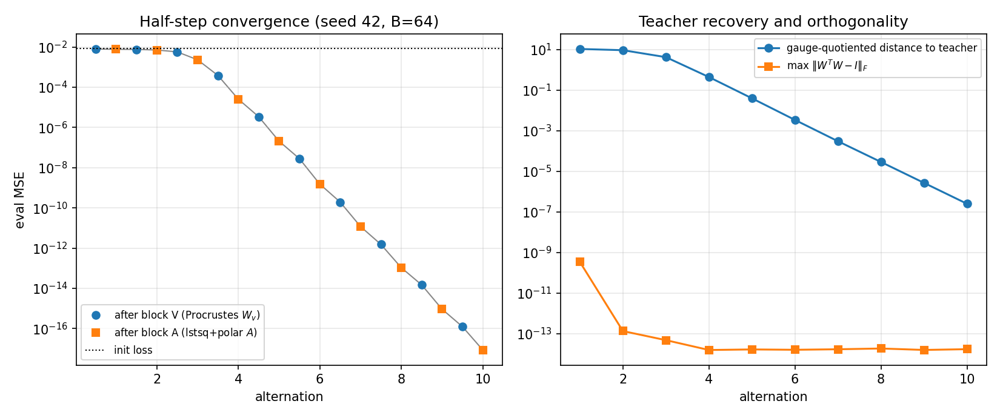
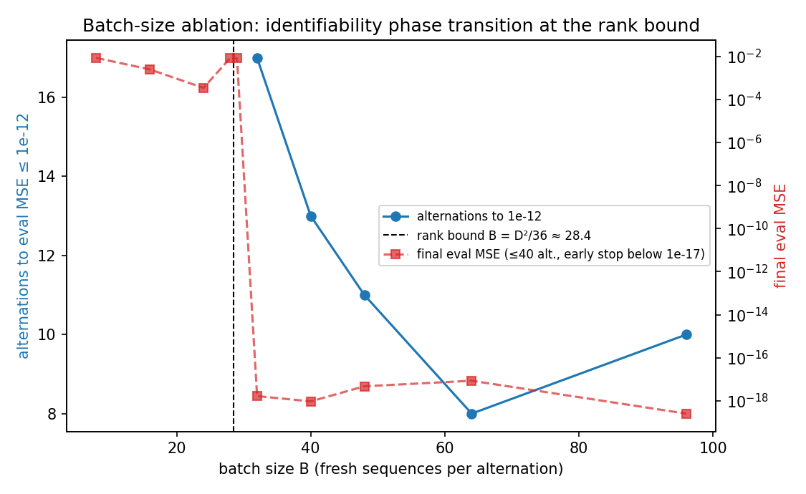
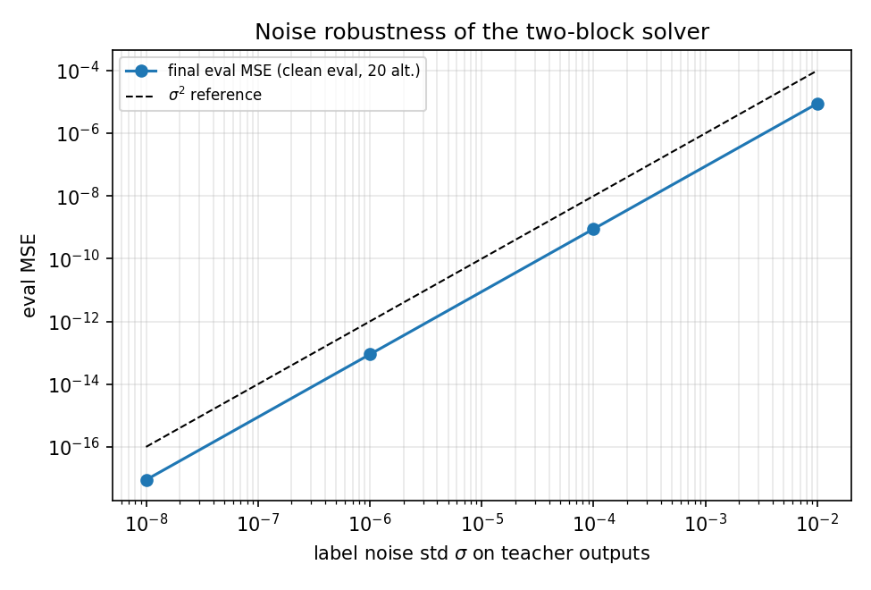

A detailed description of two_block_exact — the alternating closed-form solver that recovers
a single-layer linear-attention teacher with orthogonal weights in ~10 alternations (eval MSE 8.6e-18),
where the best gradient method needs 121 steps and Adam needs 338. Companion to the
orthogonality-exploiting updates report.
Code: ortho_updates.py (solver) and two_block_report.py (diagnostics in this report).
The single-layer linear attention forward map (D=32, N=8, causal cumsum mixing) is
Three observations make an exact alternating solver possible:
With Wq, Wk fixed, collect the attention-mixed inputs
mn = Σm≤n (qn·km) xm into the rows of a matrix
M ∈ ℝ(B·N)×D (the tril mask reproduces the causal cumsum, diagonal included).
The model output is exactly M @ W_v, so the subproblem is
Maximizing tr(WT MTY) over O(D) is the orthogonal Procrustes problem (Schönemann 1966): the global optimum is the polar factor
Two implementation notes. First, this is the exact constrained global minimizer — over all of O(D),
including the det = −1 component, which is why this step crosses determinant components freely (§6).
Second, we compute the polar factor via eigh of MTY's Gram matrix rather than SVD —
LAPACK's divide-and-conquer gesdd is known to fail on certain degenerate inputs (it crashed on
skew matrices elsewhere in this experiment's harness), and the eigh route is equally cheap at D=32.
For this particular input the choice is defensive rather than necessary: at convergence
MTY = (MTM)·Wv*, whose singular values span a benign ~4x range
(the attention-mixed rows mn have strongly position-dependent norms), and its polar factor
is exactly Wv*.
def solve_block_v(student, X, Y):
Q, K = X @ student.W_q, X @ student.W_k
scores = torch.tril(torch.einsum("bnd,bmd->bnm", Q, K)) # causal q_n . k_m, diag included
M = torch.einsum("bnm,bmd->bnd", scores, X).reshape(-1, DIM)
student.W_v.copy_(polar(M.T @ Y.reshape(-1, DIM))) # polar via eigh, not gesdd
def polar(Z, eps=1e-30): # Z (Z^T Z)^{-1/2}
w, Q = torch.linalg.eigh(Z.T @ Z)
return Z @ (Q * w.clamp_min(eps).rsqrt()) @ Q.TWith Wv fixed (so vm = xmTWv is known), the output is linear in the D² entries of A:
Flattening rows over (b,n,e) and columns over (d,f) gives a design matrix
Φ ∈ ℝ(B·N·D) × D² with out = Φ @ vec(A). We solve the unconstrained least-squares
problem and project the solution onto O(D):
def solve_block_a(student, X, Y):
V = X @ student.W_v
C = torch.cumsum(V.unsqueeze(-1) * X.unsqueeze(2), dim=1) # (B,N,E,D)
Phi = torch.einsum("bnd,bnef->bnedf", X, C).reshape(-1, DIM * DIM) # rows (b,n,e), cols d*D+f
sol = torch.linalg.lstsq(Phi, Y.reshape(-1)).solution
student.W_q.copy_(polar(sol.reshape(DIM, DIM)) @ student.W_k) # gauge: W_k frozen
An honest asymmetry. Block V is the exact optimum of its constrained subproblem.
Block A is not: minimizing over A ∈ O(D) directly is a quadratically-constrained problem with no
closed form (the Procrustes reduction fails because ‖Φ vec(A)‖ is not constant over orthogonal A —
Φ's columns are not orthonormal). Unconstrained least squares followed by polar projection is a
heuristic. It works here because the problem is realizable: when Wv is correct, the
consistent system returns exactly A* = Wq*Wk*T, which is already orthogonal,
and the projection becomes a no-op. Away from convergence the projection error is what bounds the
per-alternation contraction (§4). A unit test in ortho_updates.py --verify checks the
recovery: with Wv = Wv* plugged in, block A returns A* to ~1e-14.
Each alternation draws a fresh batch (B=64 sequences) and runs block V then block A. From the standard unaligned seed-42 init (eval MSE 8.7e-3):
| alternation | after block V | after block A | distance to teacher (gauge-quotiented) | max ‖WTW−I‖ |
|---|---|---|---|---|
| 1 | 8.0e-3 | 7.7e-3 | 10.8 | 3.4e-10 |
| 2 | 7.6e-3 | 7.1e-3 | 9.5 | 8.6e-14 |
| 3 | 5.7e-3 | 2.3e-3 | 4.3 | 4.7e-14 |
| 4 | 3.8e-4 | 2.5e-5 | 4.5e-1 | 1.5e-14 |
| 5 | 3.4e-6 | 2.1e-7 | 4.0e-2 | 1.8e-14 |
| 6 | 2.8e-8 | 1.5e-9 | 3.4e-3 | 1.6e-14 |
| 7 | 1.9e-10 | 1.2e-11 | 3.1e-4 | 1.7e-14 |
| 8 | 1.5e-12 | 1.1e-13 | 2.9e-5 | 1.6e-14 |
| 9 | 1.5e-14 | 9.2e-16 | 2.7e-6 | 1.7e-14 |
| 10 | 1.2e-16 | 8.6e-18 | 2.5e-7 | 1.5e-14 |
Three regimes are visible. Alternations 1–3 are a slow capture phase: each block solves against a badly wrong other block, so the closed forms make limited progress (the first A is the polar projection of a far-from-orthogonal least-squares fit). From alternation 4 on, convergence is geometric at a remarkably steady ~100x per alternation (~7x from the block-V half-step times ~15x from the block-A half-step), and the gauge-quotiented weight distance contracts ~10x per alternation — consistent with MSE ≈ distance². This is the expected behavior of alternating minimization on a realizable bilinear problem: the error in each block's solve is proportional to the current error of the other block, giving multiplicative contraction. Orthogonality is at machine precision (~1e-14) from alternation 2 onward — the iterates are not approximately orthogonal, they are exactly orthogonal by construction of the polar map.

Block A needs Φ to have full column rank D² = 1024, and the causal structure caps the rank per sequence. For one sequence, row (n,e) of Φ is Σm≤n V[m,e] · (xn ⊗ xm) — every row lies in span{ xn ⊗ xm : m ≤ n }, which has dimension at most N(N+1)/2 = 36. Hence
Measured ranks hit this bound exactly at every tested batch size, and the solver shows a sharp phase transition — with a one-batch margin caveat:
| B | rank(Φ) measured | bound min(36B, 1024) | alternations to 1e-12 | final eval MSE (≤40 alt.)* |
|---|---|---|---|---|
| 8 | 288 | 288 | never | 8.5e-3 |
| 16 | 576 | 576 | never | 2.5e-3 |
| 24 | 864 | 864 | never | 3.4e-4 |
| 28 | 1008 | 1008 | never | 8.5e-3 |
| 29 | 1024 | 1024 | never | 8.3e-3 |
| 32 | 1024 | 1024 | 17 | 1.7e-18 |
| 40 | 1024 | 1024 | 13 | 9.5e-19 |
| 48 | 1024 | 1024 | 11 | 4.8e-18 |
| 64 | 1024 | 1024 | 8 | 8.6e-18 |
| 96 | 1024 | 1024 | 10 | 2.6e-19 |
Note B=29: full rank, still fails. At exactly zero margin Φ's trailing singular values are small (measured cond(Φ) ≈ 292 at B=29, vs 51 at B=32 and 8.7 at B=64) — modest by float64 standards, but away from convergence the system is inconsistent (Wv is still wrong), and the ~100x amplification of that residual through the smallest singular directions defeats the per-alternation contraction, so the alternation never gains traction. In practice the solver needs a modest rank margin — B=32 reaches 1e-12 in 17 alternations, and more data per alternation buys faster capture up to B≈64. The default is B=64.
* converging runs early-stop once eval MSE ≤ 1e-17 (e.g. B=64 stops at alternation 10); only the non-converging rows ran the full 40 alternations.

Every rotation-based update (expm, Cayley, retractions, trivialization) preserves det(W) and is therefore trapped in its connected component of O(D)³ — 3/4 of random inits can never reach the teacher (see main report, Finding 3). The two-block solver's polar steps assign a globally optimal orthogonal matrix per block, det = −1 branch included, and its only dependence on the initialization at all is (Wq, Wk) in the first block-V solve — block V overwrites Wv without ever reading it, and block A overwrites Wq. The headline run is itself the component-crossing demonstration: the unaligned seed-42 init has det(A) = det(WqWkT) = −1 against the teacher's +1 — the configuration from which every det-preserving method floors at ~5e-4 forever — and the solver crosses it (final det(A) = +1, with det(Wq) flipping +1 → −1 against the frozen det(Wk) = −1), reaching 8.6e-18 in 10 alternations.
With i.i.d. Gaussian noise of std σ added to the teacher outputs during solving (evaluation stays clean), the solver floors at ≈ 0.089 σ² across six orders of magnitude in σ (σ = 1e-8 → MSE 8.9e-18, σ = 1e-6 → 8.9e-14, σ = 1e-4 → 8.9e-10, σ = 1e-2 → 8.9e-6; the ratio MSE/σ² is 0.0888 at all four points). The constant decomposes across the two blocks (measured by perturbing each block alone from the exact solution): block V contributes ≈ 0.032σ², matching its constrained degrees of freedom over the observations — dim O(D) / (B·N·D) = 496/16384 ≈ 0.030; block A contributes ≈ 0.058σ² (its unconstrained least-squares error is ≈ 0.116σ², above the naive 1024/16384 because the design Φ is anisotropic, and the polar projection roughly halves it). The sum, 0.090σ², matches the measured floor. The closed-form character of the solver is not brittle to noise — it absorbs it at the variance level, like any least-squares estimator.

uv run ortho_updates.py --verify # includes the block-A unit test (recovers A* to ~1e-14)
uv run two_block_report.py # regenerates every number and plot in this report (~90 s CPU)
Artifacts: two_block_convergence.png, two_block_batch_ablation.png,
two_block_noise.png, two_block_results.json (all raw numbers).
Solver implementation: two_block_exact() in ortho_updates.py;
instrumented version in two_block_report.py.